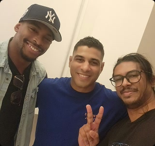
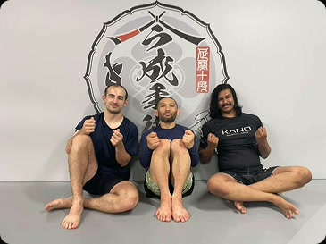
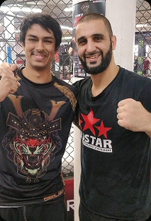
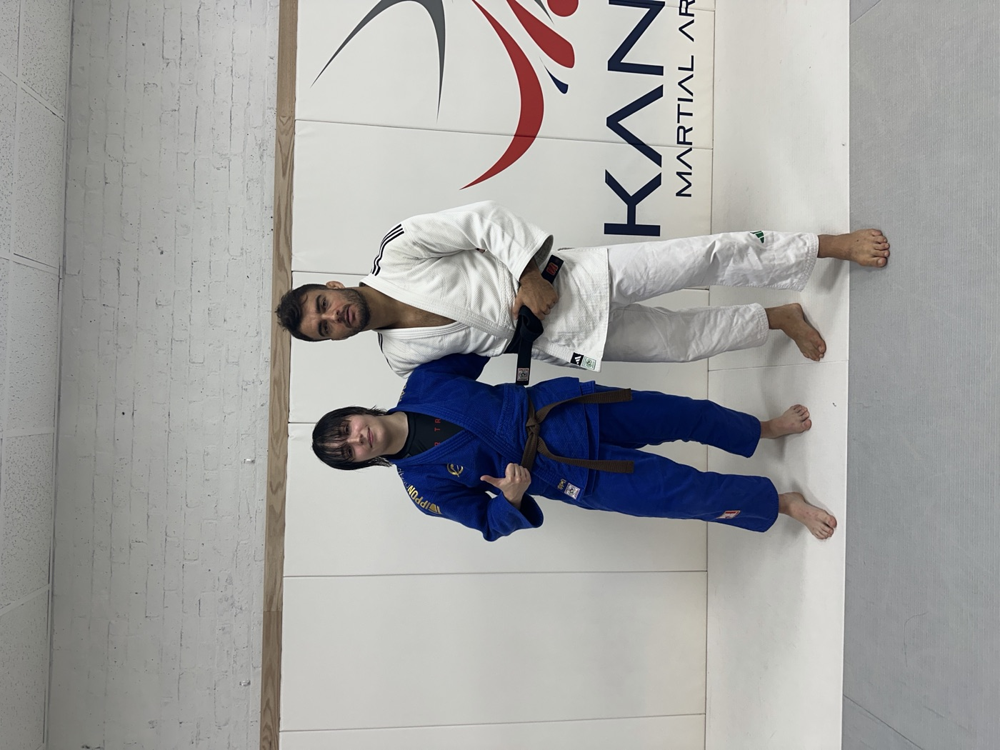

[ NO SIGNAL ]video placeholder // scroll to scrub once footage is added
01
COMPANY
Seiryoku Zenyo Labs
We are named for the judo principle of seiryoku zenyo — maximum efficiency, minimal effort.
In Kano’s writing the phrase is not about doing less. It is about spending force only where it actually does work: meeting a push by turning with it, taking balance before strength ever has to matter, letting an opponent’s own momentum finish the throw. Effort that does not change the outcome is waste.
The lab is built the same way. Capture software, a frame-accurate review pipeline, and verified clip kits — the whole chain from the camera on the wall to the event log, with nothing spent on work that does not move the outcome.
02
PROBLEM
GRAPPLING BREAKS COMPUTER VISION
Every pose model in production assumes bodies stay separate. Grappling is the sport where they don't.
From the first grip, two athletes occupy one silhouette. Limbs vanish behind torsos, keypoints jump between people, and the tracker rebinds identities in the exact half-second the throw resolves. On the ground it inverts: almost no motion, almost all the meaning.
occlusion — the decisive frames are the most hidden ones
identity swap — thrower and thrown trade skeletons mid-technique
ground phase — minimal movement, maximum consequence
ground truth — labels require someone who knows the sport
Systems that can call a sprint split or a jump shot still can't tell you what just happened on the mat.
03
TEAM
ABOUT US
researchers. designers. grapplers. all in one.
Shaker Zaman
CEO, Founder — Operations & Engineering
Formerly Head of Operations at a Khosla-backed AI infrastructure company, where he ran compliance, legal, go-to-market, recruiting and developer tooling — every function a startup needs before it can afford to hire for them — including the compliance behind a federal research contract. Most of his counterparts were YC and seed-stage teams, so he learned that end of the market by working alongside it. He competes in judo and jiu-jitsu, with gold medals in both.
Shaker Zaman was Head of Operations at a Khosla-backed AI infrastructure company, where he held compliance, legal, go-to-market, recruiting and developer tooling at the same time — every function a startup needs before it can afford to hire someone to run them. That included the administrative and compliance work behind a federal research contract, and a daily counterpart list made up mostly of YC and seed-stage teams, which is how he came to know that end of the market: by working alongside it rather than studying it.
At Magi Vision he is founder and engineer at once. He builds the capture and analysis system the team runs on capture days and trains and competes in the sport it is built for, with gold medals in judo and jiu-jitsu.

With Garry St. Leger and ADCC World Champion JT Torres

With Masakazu Imanari

With Firas Zahabi at Tristar Gym
Genevieve Puglissi
CXO, Co-Founder — Design & Product
Nearly a decade of design across sports, fintech, fashion, healthcare, AI, e-commerce, and life sciences, in print as well as digital. Holds experience within a FAANG company as a UX Research Assistant. An FIT graduate and active judo and BJJ competitor, she now sets product and experience design direction for Magi Vision.
Genevieve Puglissi has nearly a decade of design experience under her belt, spanning sports, fintech, fashion, healthcare, artificial intelligence, e-commerce, and life sciences. She has worked across print as well as digital mediums, within agencies used to high-pressure environments. She graduated from the Fashion Institute of Technology in 2024 with a BFA in Advertising & Digital Design, a double minor in Creative Technology and Art History, and an AAS in Communication Design. She holds experience within a FAANG company as a UX Research Assistant.
She is an active competitor in judo and Brazilian Jiu-Jitsu, as well as an avid weightlifter. With a skill set accumulated across industries and roles, she is now creating something for a community she is part of — something that is not only beautiful, but also usable.
At Magi Vision, she sets product and experience design direction across the full team, designing across both hardware and software: the physical unit, how it mounts and sits in a gym, and the software coaches and athletes use. She owns the product surface — the capture software an operator runs and how the system reads from the mat side — and builds and presents the deck that goes in front of investors. She designs the operator HUD hands-on, iterating against the live build rather than static mocks, and runs the capture software herself on capture days.
She is also the bridge between engineering and design on the magi system. She works to understand emerging technologies well enough to put them to use, connecting Claude with the Tkinter interface so that what the operator sees is read truthfully from Shaker’s engineering rather than approximated in a mock.
AI Engineering Intern — Fordham Computer Science ’28
A Fordham Computer Science student who has trained judo for more than 15 years, now a brown belt under Sensei Jack Krystek Sr. She helps teach younger students at her dojo, also trains Brazilian Jiu-Jitsu, and brings the view from the mat to how the system learns.
Maria Galanty is a Computer Science student at Fordham University, but a huge part of who she is has always been shaped by judo. She started training when she was about four years old, and more than 15 years later, it is still one of the most important parts of her life. She is currently a brown belt under Sensei Jack Krystek Sr., helps teach younger students at her dojo, and continues to train and learn as much as she can. Judo has given her so much over the years, and one of the things she cares about most now is being able to give back to the same community that helped shape her. Teaching younger students and helping them grow in the sport has become just as meaningful to her as her own progress. She also trains in Brazilian Jiu-Jitsu, which has given her an even broader appreciation for grappling, movement, and the small technical details that can completely change what happens in a match.
That background is a big part of what brought her to Magi Vision. She has always loved understanding why things work, whether that means breaking down a judo technique, recognizing patterns in a match, or figuring out how technology can better understand human movement. At Magi Vision, she gets to bring those two sides of herself together.
What excites her most about the team’s work is that she understands the sport not just from data or video, but from years of actually being on the mat. She knows what it feels like to train, teach, get thrown, make mistakes, and improve. Being able to take that experience and help teach an AI system how to understand what is happening feels incredibly meaningful to her.
She sees her role as a bridge between the athlete and the technology. She wants to help build tools that respect the complexity of sports and the people and communities behind them. For her, technology is most exciting when it helps people see things they could not see before, understand their performance more deeply, and continue getting better at something they care about.

With Rio 2016 Olympic gold medallist Fabio Basile
Randori at Krystek Martial Arts
// DEMO
EXPERIENCE MAGI VISION
Start a session in system and watch the state commit as it
happens — grip, kuzushi, the throw. dashboard aggregates what came
off the mat and hands back the highlights. Nothing here is staged: it is the build,
running.
// DOJOS
Where the footage comes from
The mats that let us point cameras at their rounds.


 system and watch the state commit as it
happens — grip, kuzushi, the throw.
system and watch the state commit as it
happens — grip, kuzushi, the throw.